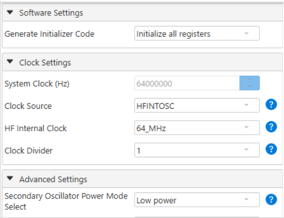
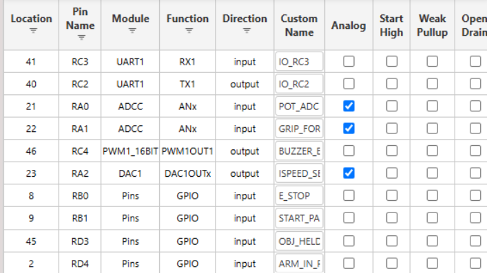
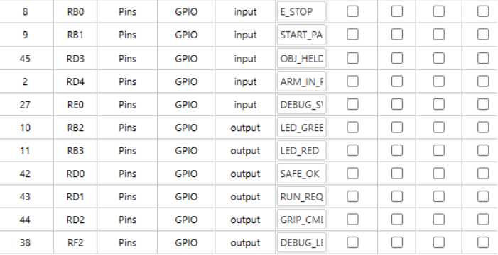
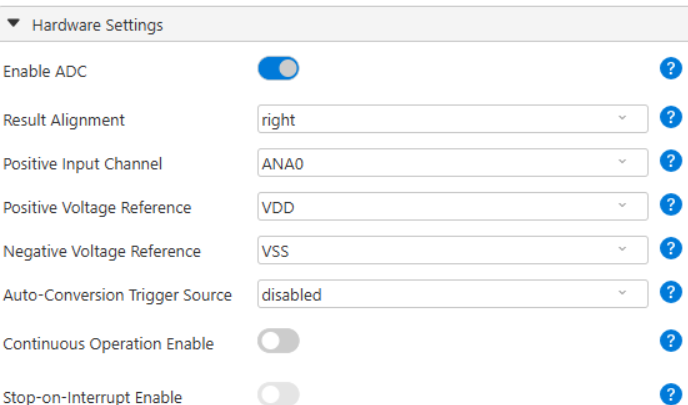
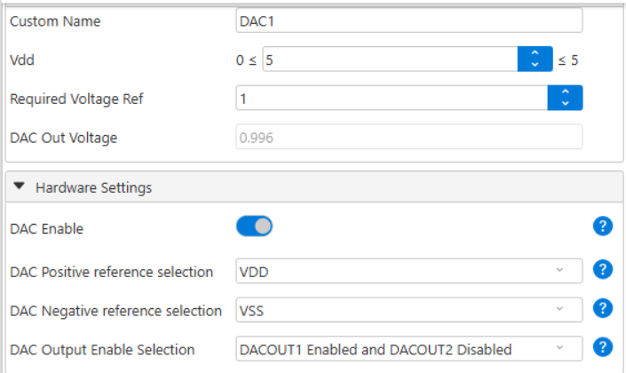
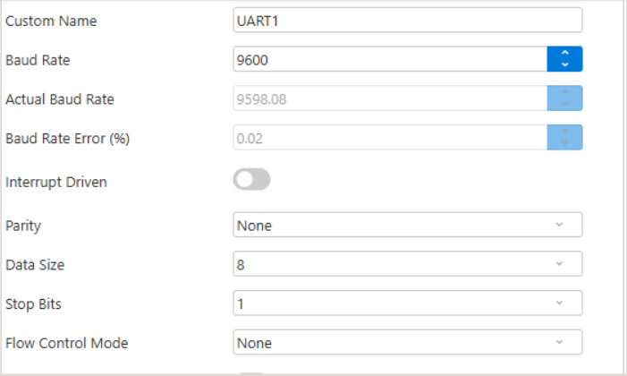
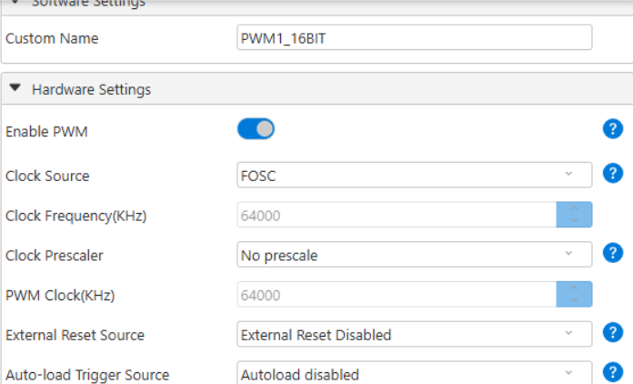
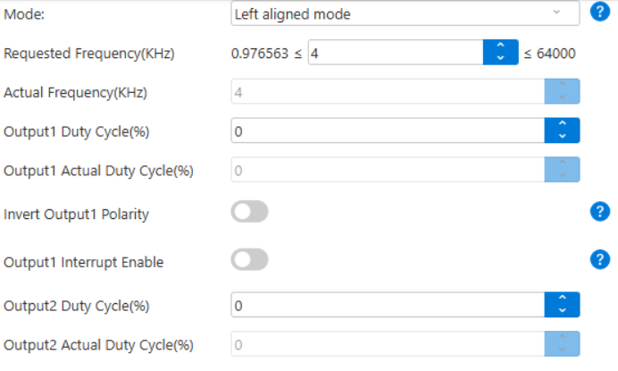
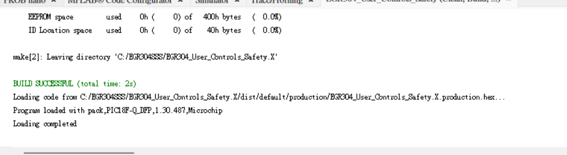

MCC Configuration
Overview
This page documents the proposed MPLAB Code Configurator (MCC) settings for the User Controls & Safety subsystem. The subsystem uses a Microchip PIC18F57Q43 Curiosity Nano to read user inputs, generate status and warning outputs, and exchange control signals with other parts of Team 107's robotic arm.
The configuration covers the system clock, GPIO pin assignments, analog-to-digital conversion (ADC), digital-to-analog conversion (DAC), UART communication, and PWM buzzer control. These settings are based on the current schematic and the MCC screenshots below. Hardware operation and team-wide communication have not yet been fully verified.
1. System Clock Configuration
The system clock is configured to use HFINTOSC at 64 MHz with a clock divider of 1, giving a system clock frequency of 64 MHz. This clock provides the timing source for the enabled microcontroller peripherals.

Figure 1. HFINTOSC clock source and divider settings.
2. Pin Assignment and GPIO Configuration
The MCC Pin Manager assigns digital and analog functions to the pins used by the subsystem. The following table summarizes the assignments shown in the screenshots and reflected in the current schematic.
| PIC Pin | Signal / Function | Direction | MCC Peripheral |
|---|---|---|---|
| RA0 | POT_ADC (speed potentiometer) | Input | ADCC |
| RA1 | GRIP_FORCE (gripper force feedback) | Input | ADCC |
| RA2 | SPEED_SET (analog speed command) | Output | DAC1 |
| RB0 | E_STOP | Input | GPIO |
| RB1 | START_PAUSE | Input | GPIO |
| RB2 | LED_GREEN | Output | GPIO |
| RB3 | LED_RED | Output | GPIO |
| RC2 | UART_TX | Output | UART1 |
| RC3 | UART_RX | Input | UART1 |
| RC4 | BUZZER_ENABLE | Output | PWM1 (16-bit) |
| RD0 | SAFE_OK | Output | GPIO |
| RD1 | RUN_REQ | Output | GPIO |
| RD2 | GRIP_CMD | Output | GPIO |
| RD3 | OBJ_HELD | Input | GPIO |
| RD4 | ARM_IN_POS | Input | GPIO |
| RE0 | DEBUG_SW | Input | GPIO |
| RF2 | DEBUG_LED | Output | GPIO |

Figure 2. Pin Manager assignments for UART, ADC, DAC, PWM, and selected digital inputs.

Figure 3. Additional GPIO input and output assignments for controls, status signals, and debugging.
3. ADC Configuration
The ADCC peripheral is enabled with right-aligned results. The screenshot shows ANA0 (RA0) as the selected positive input channel, using VDD as the positive voltage reference and VSS as the negative reference.
RA0 measures the speed-control potentiometer voltage. RA1 is also assigned as an analog input for GRIP_FORCE; firmware must select the appropriate ADC channel when that signal is sampled. The ADC readings will require verification with the actual connected circuits.

Figure 4. ADCC enable, input channel, alignment, and reference settings.
4. DAC Configuration
DAC1 is enabled, with its first output routed to RA2 (SPEED_SET). The DAC uses VDD and VSS as its reference rails. The intended software will adjust the DAC output to communicate the requested speed to the connected subsystem.

Figure 5. DAC1 output and voltage-reference configuration.
5. UART Communication Configuration
UART1 is configured for 9600 baud, 8 data bits, no parity, and 1 stop bit (8N1) without hardware flow control. The Pin Manager assigns RC2 as TX and RC3 as RX.
These UART connections are intended for communication and debugging. The team's final communication protocol and use of the separate 8-pin digital/analog interface still require agreement and integration testing.

Figure 6. UART1 baud rate, frame format, and flow-control settings.
6. PWM Buzzer Control
The 16-bit PWM1 peripheral is enabled and assigned to RC4 (BUZZER_ENABLE), which controls the ULN2003A buzzer driver. The screenshots show the PWM clock sourced from FOSC (64 MHz), with left-aligned mode and a requested output frequency of 4 kHz.
The displayed initial duty cycle is 0%, so firmware must set an appropriate duty cycle when an audible warning is required. Actual buzzer output will be verified during hardware testing.

Figure 7. PWM1 enable, clock source, and prescaler settings.

Figure 8. PWM1 frequency, alignment, and initial duty-cycle settings.
7. Build Verification
The MPLAB X output shows BUILD SUCCESSFUL, indicating that the project compiled with the selected configuration. A successful build does not establish that the external circuitry, safety response, or inter-board signals have been tested successfully.

Figure 9. Successful MPLAB X project build.
8. Next Steps
Before system-level verification, the following work remains:
- Confirm that the generated MCC pin assignments match the final KiCad Rev C schematic.
- Test the E-Stop, Start/Pause button, LEDs, and debugging signals with the physical hardware.
- Verify ADC measurements on RA0 and RA1, including any software-controlled channel switching.
- Verify the RA2 DAC speed-command voltage and the RC4 PWM buzzer output.
- Test UART communication and the team's final 8-pin interface definitions.
Status: MCC configuration and build verified by screenshots; physical operation and team integration remain to be tested.